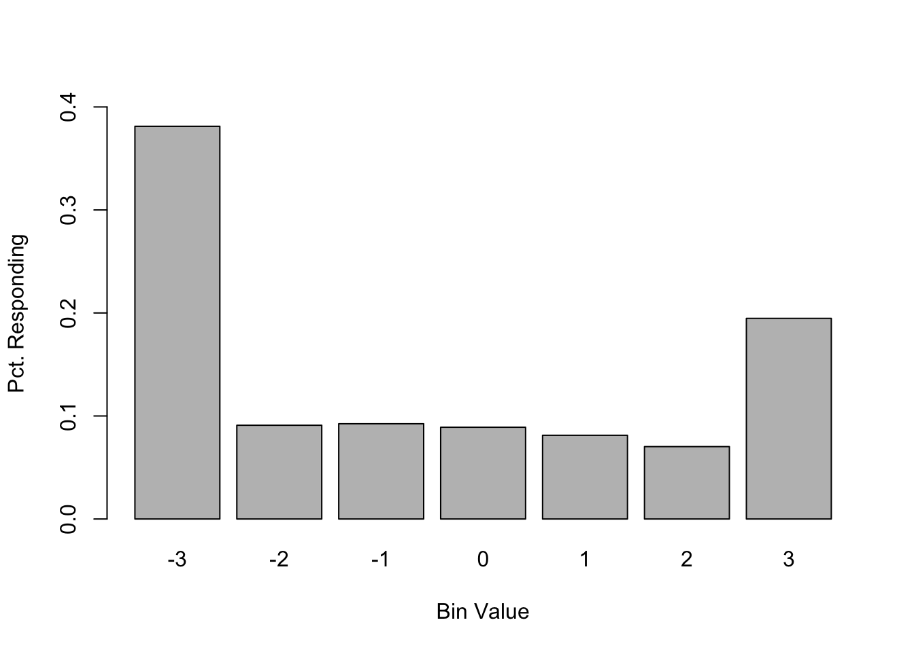

# This is how I set the working directory
# Adapt for your own computer
# setwd("~/workspace/gp-statmod/GroupPolarizationStatmod/")
# Load makeProbVec from file model.R
source("model.R")Notes and code examples to accompany “If the Null Fits, You Must Omit”
% Optional: also define argmax
Overview
Here are some quick notes on the group polarization codebase in R supporting our article, If the Null Fits, You Must Omit. The code is hosted on GitHub.
To follow along, please clone the gp-statmod directory.
$ git clone https://github.com/mt-digital/gp-statmod.gitChange directories to go to the gp-statmod/docs directory where this document lives:
cd gp-statmod/docsThen you can run the examples in this document, edit them, etc., on your own computer.
This tutorial is still valuable if you’re just reading it on the code documentation associated with the journal article.
You will learn how the code works that simulates measurements of opinion change in group polarization experiments that test if and by how much group discussion polarizes opinions. I used this modeling system to simulate 57 different group polarization experimental conditions across a corpus of ten journal articles published over several decades, and across social science subdisciplines for my paper with Paul Smaldino, “Null Fits? You Must Omit! How Measurement Artifacts Undermine Many Group Polarization Replications”.
Simulations
I developed two models of experimental observations in group polarization experiments to serve complementary purposes. These models provide two ways to simulate observations of mere agreement, which serves as our null-polarization model, \(\mathcal{M}_0\),
First is the expectation model where we model the observation of the average group opinion as the expectation value of the distribution of ordinal opinions. We calculate the ordinal distribution of opinions by writing the endpoints of each measurement bins as limits of integration in a series of \(B\) integrals, where \(B\) is the number of measurement bins. For example, an example of an ordinal measurement scale might be a Likert-style series of disagree-agree levels, associated with numerical values: -3 indicates
Expectation model of group polarization experiments
See Method section of the paper where we explain how to calculate the probability density vector representing the probability that a participant gives the opinion represented by each measurement bin, \(b\).
Here we show how to calculate the mean observed opinion at pre- and post-discussion to show how spurious group polarization occurs under a null polarization hypothesis.
Moscovici and Zavalloni (1969) report observing a mean opinion of -0.6 in pre-discussion opinions and mean opinion -1.04 post-discussion, measured using an ordinal scale from -3 (strongly disagree) to +3 (strongly agree). Let’s calculate the probability density vector for the pre- and post-discussion distributions then calculate the mean opinion for each one. The latent distributions have the same mean, -1.2, but different variances, which results in a shifted observed mean due to opinion clipping.

We call this a null polarization model (defined in terms of latent opinions) that generates spurious group polarization. Spurious group polarization is when the observed opinion distributions appear to polarize (i.e., radicalize, or become more extreme) that does notrepresent the true change in latent opinions. The measurement procedure clips extreme opinions less than the minimum bin value, or greater than the maximum, causing the average observed opinion to spuriously appear polarized.
Let’s use some modeling code from the repository to demonstrate. For this part we need to source (use code from) the model.R file that has the the binProb function I use below. Also make sure you have set the working directory to the GroupPolarizationStatmod directory within the gp-stats project/repository directory.
For a preliminary step, adapt my code below for your computer. Change the argument to root.dir to be the location of the GroupPolarizationStatmod directory on your own computer.
Now in the following chunk, the source function will know where to look for the file with the makeProbVec function we need, model.R.
Now read in the pre- and post-discussion means from Moscovici1969_Americans
# Experimental means
mosc1969_ave_pre <- -0.6
mosc1969_ave_post <- -1.04Create a hypothesized null model that will spuriously look like polarization, with the same pre- and post-discussion means above. These correspond to \(\mu\), \(\sigma_\mathrm{pre}\), and \(\sigma_\mathrm{post}\) from the paper that define a null polarization model, \(\nu = (\mu, \sigma_\mathrm{pre}, \sigma_\mathrm{post})\).
# Hypothesized null model that looks polarized
mu <- -1.2
sd_pre <- 4.3
sd_post <- 1.9The function makeProbVec creates the vector \(f[b]\) of probabilities that bin \(b_i \in b\) will be reported by a randomly-selected participant, given the measurement bin values and the distribution of latent opinions, assumed normal, defined by the mean and standard deviation, \(\mu\) and \(\sigma\). and bin values. Here bin values are \(b=-3,-2,\ldots,3\); \(\mu=-1.2\); and \(\sigma=4.3\).
# Vector w/ probability density for each bin
f_pre <- makeProbVec(-3:3, -1.2, 4.3)
# Print to two significant digits
sprintf("%.2f", f_pre)[1] "0.38" "0.09" "0.09" "0.09" "0.08" "0.07" "0.19"Let’s barplot to have a look:
barplot(f_pre,
names.arg = -3:3,
ylim = c(0, 0.4),
ylab = "Pct. Responding",
xlab = "Bin Value")
Let’s check the simulated average observed opinion, \(\bar{o}\), using the expected value of the distribution, i.e., we assume \(\bar{o} = \langle o \rangle\), so we use the standard formula for expected value, which assumes that \(f[b]\) is normalized.
\[ \bar{o} = \sum_{b=b_1}^{b_B} b \cdot f[b]. \]
In code,
# Calculate simulated and compare with actual
sim_obs_pre <- sum((-3:3) * f_pre)
print(abs(sim_obs_pre - mosc1969_ave_pre))[1] 0.01195818This is within one significant digit greater than the reporting scale, meaning it is an acceptable fit.
This shows that even just a little spread in the distribution of latent opinions results in a seriously distorted mean (Liddell and Kruschke 2018)—one that reproduces the mean reported by Moscovici and Zavalloni (1969), but actually confirming the null polarization hypothesis!
Let’s check the simulated average observed opinion for post-deliberation, repeating the previous steps for \(t=\mathrm{post}\).
f_post <- makeProbVec(-3:3, mu, sd_post)
sprintf("%.2f", f_post)[1] "0.25" "0.19" "0.21" "0.17" "0.11" "0.05" "0.03"# Calculate simulated and compare with actual
sim_obs_post <- sum((-3:3) * f_post)
print(abs(sim_obs_post - mosc1969_ave_post))[1] 0.00094857Here we get even closer agreement between the observed post-discussion average opinion in Moscovici and Zavalloni (1969) and the one we simulated.
The Generative Model and Bayesian Inference for False Detections
The analysis of the generative model has two major components:
- Calculate false positive/detection rates for the simulated null polarization model, mere agreement—where polarization experiment participant opinions agree more following discussion than before. Recall this is modeled as a decrease in the standard deviation of latent opinions, but a constant mean latent opinion. Here, then, we calculate the false positive rate, \(\alpha_e\) as a function of the effect-detection threshold, \(d^*\), i.e., \[ \alpha_e(d^*) = \Pr\!\left( \hat{d} \ge d^{*} \mid \mathcal{M}_{0} \right). \tag{1}\] In the study, we calculate the right-hand side as the frequency of the 1000 trials where \(\hat{d} \ge d^*\) for simulations of experiment, \(e\).
- Find an effect–detection threshold, \(d^*(\alpha)\), such that, under the null model, the probability of observing an estimated effect size exceeding $d^*(\alpha)$ is some target false positive rate, \(\alpha^* = 0.05\), for example: \[ d^* = \min~d,~~\text{subject to}~\Pr\!\left( \hat{d} \ge d \mid \mathcal{M}_{0} \right) \le\alpha^*. \tag{2}\] This yields a null-model–calibrated false–positive rate for detecting a group polarization effect.
The first step in our generative model of false detections is to generate simulated experimental data from a mere agreement null-polarization model. Then we can calculate how frequently an effect size was inferred that exceeded the effect-detection threshold.
Simulate Experimental Data
I simulate experimental group polarization data for a given time, \(t\), with latent group opinion mean and standard deviation, \(\mu_t\) and \(\sigma_t\), and with a survey response scale defined by \(B\) bin values, \(b_i\), with \(i=1,\ldots,B\).
Simulate each experimental design’s false positive rate
Here’s how to calculate the Type I or family-wise error rate for all the experiments (though I misnamed the function back in the day, so it calls all of the error rates “family-wise” because I had understood them to be synonyms).
source("src/fwer.R")
probit_fits_dir <- "data/probit_fits"
# Set a "moderate" significance, according to Cohen's definitions
significance_val <- 0.5
fwer_tbl <- calculate_fwer(probit_fits_dir, significance_val);
print(head(fwer_tbl, n = 10))# A tibble: 10 × 3
StudyID ExperimentID FWER
<chr> <chr> <dbl>
1 Schkade2010 Boulder-CivilUnions 0.598
2 Burnstein1975 Experimental 0.406
3 Burnstein1973 B 0.351
4 Abrams1990 Uncategorized3 0.349
5 Friedkin1999 Tetrads-Sports 0.342
6 Moscovici1969 Americans 0.335
7 Abrams1990 Uncategorized4 0.333
8 Burnstein1973 A 0.319
9 Abrams1990 Uncategorized1 0.319
10 Abrams1990 Categorized2 0.305This is used inside the calc_fdr_vs_significance function that adds another column to this dataframe, the false discovery rate (FDR) for a set of significance values. Here it is being called with the default metascience parameters with a base rate of \(b=0.1\) and a statistical power of \(W=0.8\). We consider three effect-detection thresholds in the paper: “small”, “medium”, and “large” effect sizes traditionally assumed practically meaningful across social sciences (Cohen 1988).
The calc_fdr_vs_significance function calculates the false-positive rate (\(\alpha\)) and false detection rate (\(\mathrm{FDR}\)) reported for a variety of effect-detection thresholds, \(d^*\), as we call them in the paper. When I first wrote the code, though, I was thinking about detection thresholds as synonymous with “significance values”. So that’s why the function name, calc_fdr_vs_significance, includes the word significance, which is a stand-in for the maximally descriptive “effect-detection thresholds” terminology. This seemed fine to keep things simple and not change the name everywhere in the code. But it was right to change it for the paper, since significance is only understood in a p-value based null-hypothesis significance testing approach, where a hypothesis is confirmed if the p-value is less than some particular threshold. I updated the prose in the article to reflect this distinction, but left the code as-is.
I put this function in the scripts directory because to run the full analyses presented in the paper it’s only necessary to run calc_fdr_vs_significance since it creates a column for the false positive rate and the estimated false detection rate calculated for each experimental design we studied.
Below I call the function with the defaults specified, for illustration. Remember the significance_vals map to effect-detection thresholds (\(d^*\)) in the paper.
source("scripts/analysis.R")
# This
fdr_over_thresholds <- calc_fdr_vs_significance(
probit_fits_dir = probit_fits_dir, # defined in above code block
base_rate = 0.1, power = 0.8, significance_vals = c(0.2, 0.5, 0.8)
)
print(head(fdr_over_thresholds, n=10))# A tibble: 10 × 7
StudyID ExperimentID FWER FDR SigVal Power BaseRate
<chr> <chr> <dbl> <dbl> <dbl> <dbl> <dbl>
1 Schkade2010 Boulder-CivilUnions 0.69 0.886 0.2 0.8 0.1
2 Burnstein1975 Experimental 0.518 0.854 0.2 0.8 0.1
3 Abrams1990 Uncategorized3 0.471 0.841 0.2 0.8 0.1
4 Abrams1990 Uncategorized4 0.459 0.838 0.2 0.8 0.1
5 Burnstein1973 B 0.438 0.831 0.2 0.8 0.1
6 Abrams1990 Uncategorized1 0.434 0.830 0.2 0.8 0.1
7 Krizan2007 NoOutgroupScenario2 0.423 0.826 0.2 0.8 0.1
8 Friedkin1999 Tetrads-Sports 0.417 0.824 0.2 0.8 0.1
9 Abrams1990 Uncategorized5 0.414 0.823 0.2 0.8 0.1
10 Krizan2007 NoOutgroupScenario1 0.41 0.822 0.2 0.8 0.1To see SigVal = 0.8 (ie \(d^* = 0.8\)), check the tail of the table:
print(tail(fdr_over_thresholds, n = 10))# A tibble: 10 × 7
StudyID ExperimentID FWER FDR SigVal Power BaseRate
<chr> <chr> <dbl> <dbl> <dbl> <dbl> <dbl>
1 Hogg1990 Risky-Neutral 0.072 0.448 0.8 0.8 0.1
2 Hogg1990 Neutral-Cautious 0.0680 0.433 0.8 0.8 0.1
3 Myers1975 Feminists-Experimental 0.0630 0.415 0.8 0.8 0.1
4 Friedkin1999 Dyads-Surgery 0.0540 0.378 0.8 0.8 0.1
5 Schkade2010 COSprings-CivilUnions 0.038 0.299 0.8 0.8 0.1
6 Friedkin1999 Triads-School 0.0360 0.288 0.8 0.8 0.1
7 Friedkin1999 Triads-Sports 0.0340 0.277 0.8 0.8 0.1
8 Burnstein1973 F 0.0330 0.271 0.8 0.8 0.1
9 Friedkin1999 Tetrads-Surgery 0.0290 0.246 0.8 0.8 0.1
10 Friedkin1999 Tetrads-School 0.027 0.233 0.8 0.8 0.1Find effect-detection thresholds to achieve \(\alpha = 0.05\)
In the second step of our generative model analysis I calculate the solution to the problem in Equation 2, finding the effect-detection threshold, \(d^*\), that achieves a target false positive rate, \(\alpha^* = 0.05\).
Analyses
Identify Invalid Replications: All But 5% Were Invalidated
Evaluate Experimental Designs: ~70% Chance a Polarization Detection was Erroneous
Specify Effect-Detection Thresholds: Spec Experiments—Don’t Just Design Them—and Avoid Informed Guesswork
References
Cohen, Jacob. 1988. Statistical Power Analysis for the Behavioral Sciences. 2nd ed. New York: Lawrence Erlbaum.
Liddell, Torrin M., and John K. Kruschke. 2018. “Analyzing ordinal data with metric models: What could possibly go wrong?” Journal of Experimental Social Psychology 79: 328–48. https://doi.org/10.1016/j.jesp.2018.08.009.
Moscovici, Serge, and Marisa Zavalloni. 1969. “The group as a polarizer of attitudes.” Journal of Personality and Social Psychology 12 (2): 125–35.